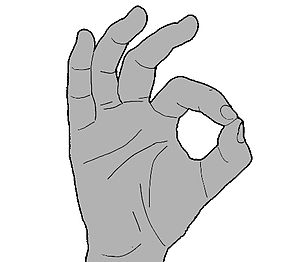

A-OK
An A-ok is both a saying, derived from okay, and a hand-gesture done by connecting the thumb and index finger into a circle (the O), and holding the other fingers straight or relaxed in the air.
Unicode symbol U+1F44C (👌) represents this gesture..
More Info
Refer to Wikipedia/A-ok
Hand Gestures
References
Wikipedia. The Free Enciclopedia
© All Rights Reversed.